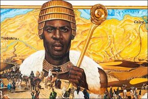
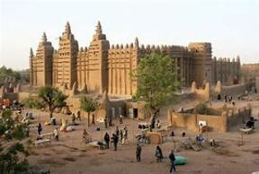
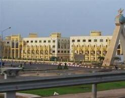
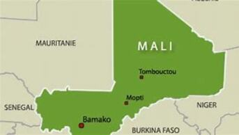

The Mali Empire of West Africa Originated with the founder of Sundiata Keita after a victory over the Kingdom of Sosso. He quickly created a centralized government,
diplomacy and a well-trained army which let them pave the way for making the largest Empire Africa has seen yet.
 Kings had immense power in their kingdom
which allowed them to control virtually everything from being a judge to being able to be the only one able to have golden nuggets and making trade much harder. Speaking
of trade... Timbuktu was a semi-independent trade route that allowed from trade everywhere a boat could get in from since they had access to the Niger River.

With the New leader Mansa Musa he let the empire achieve new heights with more land than ever, cultural diffusion and a lot of wealth.
Mali started experiencing a lot of tradic since it acted like a middle trader between North Africa and the Niger River to the South and Mali proffited a lot. They recieved gold,
salt, ivory, and slaves. With all this traffic it made Muslim Merchants travel to to Mali who in turn spread Islam and converted Mali rulers who eventually spread it even more.

Under the same ruler their military grew to a staggering 100,000 men, including armored soldier groups with 10,000 horses with a talented general named Saran Mandian. Through
this army Mansa Musa was able to expand their land by 2 times the size it already was. With the capturing of all these lands lead to more people being in the empire which included
people of many different religions and ethnicities. With these people coming in Mansa Musa decided to make provinces to divide his land with each province having a governer appointed by him.

This is a very nice place to visit because of all the amazing places you can see like Timbuktu and its incredible structures. You can also see the beautiful waters of the niger river
and the wild life that roams around on the islands scattered around
🏠Back To Home🏠